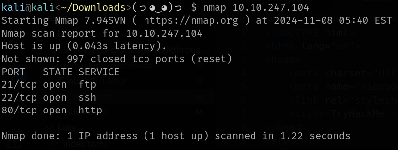
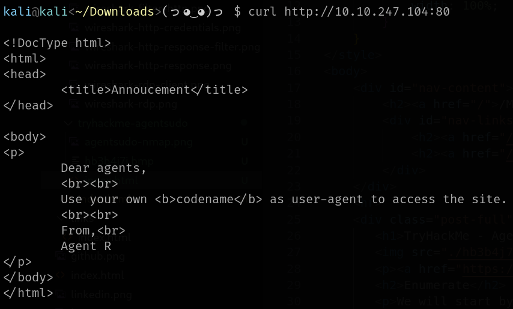

We will start by running nmap scan on the target machine.
We can see 3 open ports - FTP, SSH, HTTP.
Question: How many open ports?
Answer: 3
Let's try send request to the HTTP.
We will need to edit our User-Agent HTTP header to match the agent codename.
Question: How you redirect yourself to a secret page?
Answer: user-agent
That can be done by adding -A option to curl command followed by the user-agent we want to use. The question still remains which codename should we use.
Let's brute-force it using this simple inline bash script:
for char in {A..Z}; do echo -n "$char: "; curl -A "$char" -o /dev/null -s -w "%{http_code}\n" "http://10.10.247.104:80"; done
We can see that letter C redirects as somewhere.
Finally we send another request with user-agent C, don't forget to add -L option to the curl command to follow redirects.
Response reveals the agent name is "chris".
Question: What is the agent name?
Answer: chris
The weak password note suggests we should be able to perform a brute-force attack on the FTP service we enumerated earlier.
Hydra will help us with that. I will use already installed wordlist in kali - /usr/share/wordlists/john.lst.
Question: FTP password?
Answer: crystal
After logging to the FTP server, we get 3 files.
Let's read the message first.
According to the message, the downloaded pictures should contain some secret information.
We can try use binwalk tool to find files hidden in the pictures.
We managed to get zip file out of the picture, but it's protected by password. We can again try to brute-force the password.
John tool will help us with that. First, we need to get the hash of the password from the zip file using zip2john and output it to any file.
After that we are ready to crack the password, I have used the same wordlist as the last time.
Question: Zip file password?
Answer: alien
After unzipping the file, we found another message.
The QXJlYTUx string seems to be encoded. We can get the original text by decoding it from base64.
Question: steg password?
Answer: Area51
This password will help us in trying another secret file in the second picture. I have used steghide tool to extract the file. The Area51 string is used as the passphrase.
The extracted text file gives us everything we need to move forward and login to SSH.
Question: Who is the other agent (in full name)?
Answer: james
Question: SSH password?
Answer: hackerrules!
After logging to SSH we can found the user flag.
Question: What is the user flag?
Answer: b03d975e8c92a7c04146cfa7a5a313c7
To get answer for the second question we need to download the jpg image.
I have done reverse image search using tineye website. Hint suggest we should use Foxnews article to find the incident name. We can filter just results for foxnews.com.
Question: What is the incident of the photo called?
Answer: Roswell alien autopsy
As the CTF name hints we will probably need to use sudo command to escalate our privileges.
First let's find out the version of the sudo.
After quick search I found that sudo version 1.8.21p2 has vulnerability - CVE-2019-14287.
Question: CVE number for the escalation?
Answer: CVE-2019-14287
CVE-2019-14287 vulnerability can be used in situation where you are not allowed to run the sudo commands as the root user, but you can run commands as other users.
It can be done by adding -u option to the sudo command followed by the user name.
This option also allows passing UID instead of the user name -> #{UID}.
Vulnerable sudo version incorrectly handles UIDs -1 and 4294967295. Sudo interprets this as root (UID 0) giving as permission to run the command.
By gaining root shell we can simply read the final message in /root directory.
Question: What is the root flag?
Answer: b53a02f55b57d4439e3341834d70c062
Question: (Bonus) Who is Agent R?
Answer: DesKel